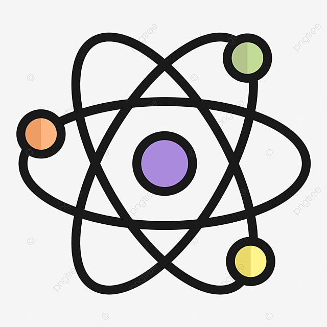

Escolha a Matéria para Estudar
Biologia
Questões e teoria biológicas.
Matemática
Formulas e perguntas.
Física
Formulas, perguntas e teoria.
Vestibulares

Estudos preparatórios.
Questões e teoria biológicas.
Formulas e perguntas.
Formulas, perguntas e teoria.
Estudos preparatórios.